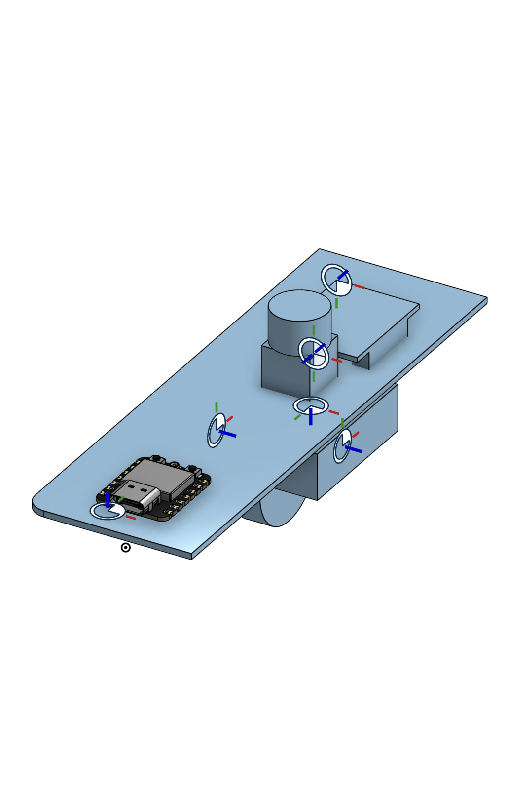
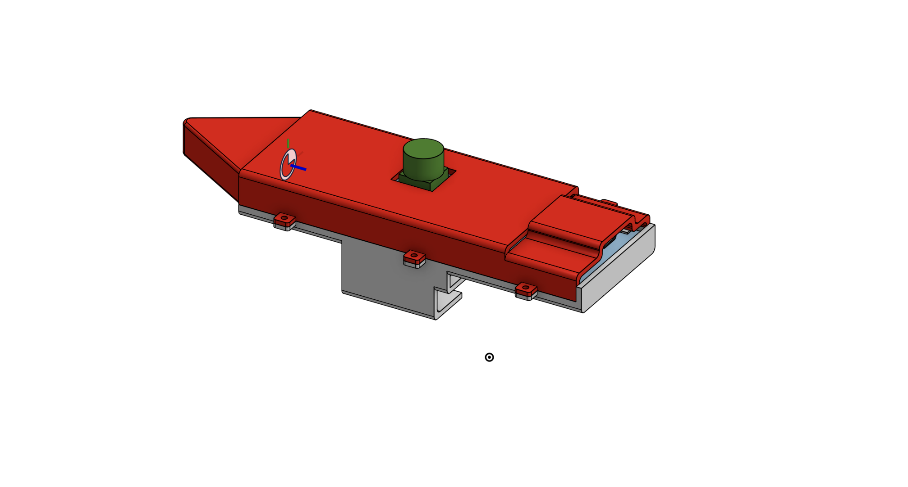
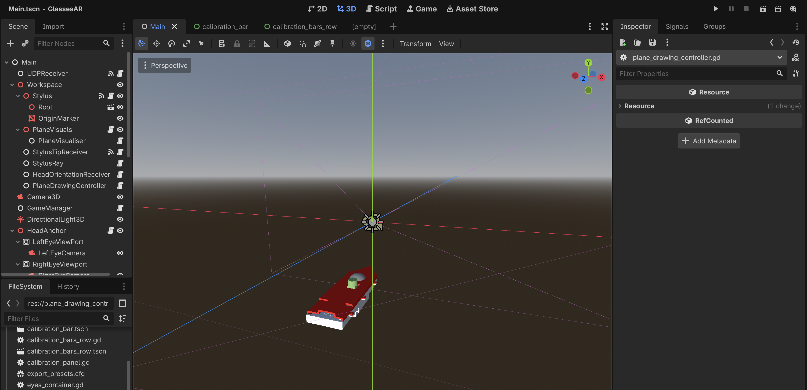
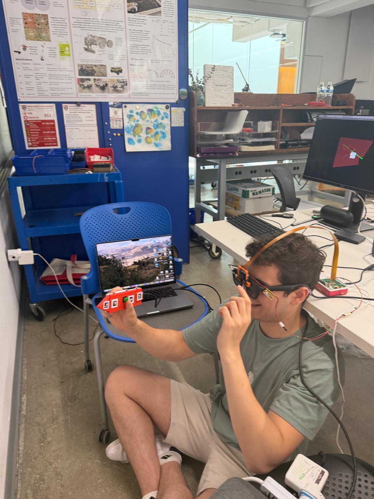

Week 13: Final Project
Component: Stylus
Upon completing the machine building assignment, the first component of my final project I decided to tackle was the stylus. At this point in time, I had a pin-wire breadboard prototype of the circuit made and tested, but I needed to move this to a protoboard and design an enclosure that would it together in a somewhat aesthetic way.


Breadboard prototype & Protoboard CAD
Moving the stylus from a breadboard to a protoboard was mostly easy, with the exception of the mouse wheel. Thsi is because the best way to hold the mouse wheel in place while allowing to spin and click, was to use the section of the mouse circuit that actually held the wheel in place. This part was cut out and attached to the protoboard with great care, yet none of the encoder nor button signals could be read by the Xiao. I later discovered this was because there was a hidden ground somewhere on the board, and ended up having the cut through two traces to prevent any contact with it.
With the protoboard version now ready, it was time to design the enclosure for the stylus. To do this accurately, I had to model the protoboard circuit on Onshape, and base the enclosure around that. This can be seen above, which came after a very long and tedious process of measuring parts on the board and making the footprint for each component.

Stylus Enclosure.
I then spent a very long time designing the enclosure. Whilst it is not the most aesthetic looking design that I could make, in the name of speed and getting it right the first time, I was satisfied with how it came out. There was no need for a reprint as all of my measurements were correct and it fit together perfectly. The way the enclosure holds the circuit board, is that each half of the enclosure has some internal slots. When both halves are brought together, the slots line up with the board and lock it in position.
I then added ARUco markers (Like QR codes) all around the stylus, so that position in 3D space could be tracked by the RGB camera, and combined with the readings from the onboard accelerometer to create a full picture of how the stylus behaves.
What then followed was an extremely lengthy process of diagnosing issues with the connection between my stylus and my Unity software. In summary, it turns out the accelerometer, magnetometer, and gyroscope all have to be calibrated before proper use, which involved creating an entirely new Unity scene before my stuylus homing scene. On top of this it became clear that Unity does not run on Raspberry Pi, so I had to move my entire project over to Godot, which took a long time to setup. Finally there were clear issues with how BLE would refuse to reconnect with the software following an early stop of the program. This was because there was a stale connection still occurring between the Stylus and software from the previous run that had to be properly ended.
Once these were fixed I then moved onto the software.
Component: Software
Following my transfer over to Godot, I quickly progressed through scene building, and made the sensor calibration, Stylus homing, and plane selection scenes very quickly as I was running out of time. Formatting the scene to look tidy and cohesive provde to be a challenge with Godot, but I eventually go the hang of it.

Godot view & Initial Plane selection/Stylus tracking scenes.
The plane selection scene relied on the use of a Python script that used the depth camera to identify flat surfaces to draw on. This was very finicky to setup, and at first it produced a mess of thin areas and lines for some reason. I then discovered this was because there was a difference in coordinate systems between Godot and that of the depth camera, and once I aligned them it worked correctly (Shown above).
Plane selection scene also relied on stylus tracking, wher the RGB camera would use the ARUco markers to track the position of the Stylus. This worked very well, even at extreme angles and positions, and whilst it did involve calibrating the camera in the first place to find its intrinsics matrix, afterwards the tracking was accurate and reliable.
The final major hurdle at this point, before completing the software with the CAD drawing and extruding scene, was getting the glasses to display stereoscopic image (True 3D). I had tried this a few days before using a software called Monado, which I had almost gotten to work, but something was preventing it from fully accessing data on my glasses. So instead I moved to XRealAirLinux: a library that recognises the glasses and can make them display two different images. After a lot of configuring, this worked, and I edited my Godot scenes to contain two camera, offset a small horizontal distance apart.
Integration

First experience wearing the glasses.
With the software mostly ready, the glasses displaying in 3D, and the stylus behaving properly, it was time to integrate all of it togeher and actually wear and use the glasses. This involved taping the raspberry pi to the table, the cameras cables to any fixed surface to prevent them getting pulled out, and sitting on the floor in front of the Pi so as not to stretch the ribbon cable too far. After testing a lot of different seating positions, I finally found an ideal on with the Pi right by the edge of the table, as shown above.
I tested all features of the system at this point to identify any issues that couldn't be seen in development and found none thankfully, though I did notice the Pi lagging a bit and dropping video output to 15fps, likely due to thermal throttling. This will be overcome in future with a proper cooler for the Pi.
Click here for a full demo of my glasses system.
The final thing to do was to make a basic drawing and extrusion scene, that used the selected plane as a canvas. This was done pretty quickly, whereupon I tested it once then moved the entire system to another table which would be better for the presentation. Shown above is a video demonstrating the glasses operating.
Whilst the system is highly fragile, temperamental and noisy, it does work and proves the concept of designing over the real world in Augmented Reality. I even discovered that the glasses had a built in accelerometer, so I could do proper head tracking and world-anchoring of holograms in the scene. Moments before the presentations, I decided to call my project: Designer Glasses.
I always had in mind coming out of this course with an initial demo that would impress and I think I succeeded. I am really motivated to take this project much further than this, with the first next step being making to far more stable and easy to test. I could not have done any of this project without guidance from Nathan, Hannah, Victor, Jonathan and Diego so I would like to thank them for all of their help!